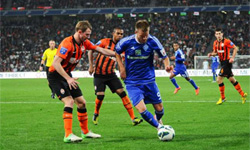
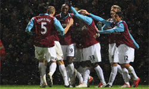
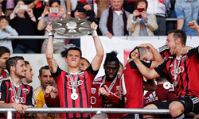
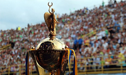

Динамо - Шахтер
16.10.15

Рассуждать на тему того, кто же победит в дуэли Динамо-Шахтёр, болельщику Динамо с 29-летним стажем, мягко говоря, сложно ) Но орать «победят киевляне, потому что я за них болею», - глупо. Матч сложный для прогнозирования для любого человека, мало-мальски знакомого с реалиями украинского футбола. Более того, чем больше знаешь «внутреннюю кухню» украинского первенства, тем больше понимаешь, что есть масса вещей, влияющих на ...
Грандова хвороба Вест Хема
6.09.15

Нікому не спадало на думку звернути увагу на те, що Біліч просто феноменально вміє налаштувати свою команду на грандів, а потім відпускати на самотік матчі з середняками і аутсайдерами по типу "а, якось то воно буде"?
Всі ці перемоги над Арсеналом, Манчестер Сіті, Ліверпулем. А поряд - поразки від Борнмута і вже двічі від Лестера...
Коли програє Інгольштадт?
24.09.15

Якщо чесно, то три сухих виїздних перемоги поспіль у виконанні новачка Бундесліги уже і так натякає, що пора б задуматися над тим, коли ця серія закінчиться.
Чому вона має закінчитися на мандрівці до Кельну?
Ну, Кельн явно показує, що він в цьому сезоні буде грати роль дуже негостинного господаря: якщо минулого сезону в перших ...
На тобі, Боже, що мені негоже!
17.05.15

Якщо чесно, то три сухих виїздних перемоги поспіль у виконанні новачка Бундесліги уже і так натякає, що пора б задуматися над тим, коли ця серія закінчиться.
Чому вона має закінчитися на мандрівці до Кельну?
Ну, Кельн явно показує, що він в цьому сезоні буде грати роль дуже негостинного господаря: якщо минулого сезону в перших ...